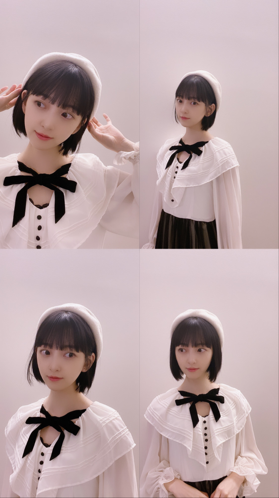
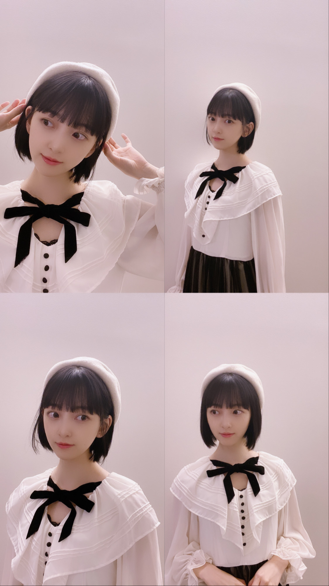

2020/0930Wedいい湯だなアハハン
昨日は半身浴をしながら
お風呂で明太子フランスを食べました！
そしたら残りちょっとの時に湯船に落としました...
ふにゃふにゃになりました...
気をつけなきゃ
そして昨日の入浴剤は
効き湯の緑の肩凝り腰痛に効くやつ^ - ^
寒くなってきて体がカチコチです...
みなさんも体温めて寝てね〜
リクエストコスプレ第二弾は
冴えない彼女の育て方
の 加藤恵 さま！


たまたまお家に白ベレー帽があり
ラッキーでした！
ロングの加藤恵さまもすきです...
次はなんのコスプレにしようかな^ - ^

with発売中です^ - ^
みてね^ - ^
では
昨日は半身浴をしながら
お風呂で明太子フランスを食べました！
そしたら残りちょっとの時に湯船に落としました...
ふにゃふにゃになりました...
気をつけなきゃ
そして昨日の入浴剤は
効き湯の緑の肩凝り腰痛に効くやつ^ - ^
寒くなってきて体がカチコチです...
みなさんも体温めて寝てね〜
リクエストコスプレ第二弾は
冴えない彼女の育て方
の 加藤恵 さま！

たまたまお家に白ベレー帽があり
ラッキーでした！
ロングの加藤恵さまもすきです...
次はなんのコスプレにしようかな^ - ^
with発売中です^ - ^
みてね^ - ^
では
2020/09/30 13:54
コメント(280)
後半戦出なかったねぇ～
おやすみおなぁ～
おやすみおなぁ～
チャァオ〜〜!☆彡
みおちゃん、こんばんは〜〜❕❤️❤️❤️笑顔
今日夕方携帯ショップに行ってきたよ〜❕❤️❤️❤️笑顔
携帯初期状態だから、色々アプリ設定しています❕笑顔
さっき有吉反省会見たよ〜❕笑顔
最後の場面とかで、もし困ったら〜〜・・
頭の中で〜「医学用語で、保健で習ったとか〜」・・
「人の体の中を守る物です」って
大抵は〜そう考えておけば、絶対〜恐れることも、困ることはないと思いますよ〜〜❕❤️❤️❤️笑顔
頑張ってねぇ❕❤️❤️❤️笑顔
(＠＾▽゜＠）ゞ❤️❤️❤️
❇️❇️おすまし！⚜️❇️⭐彡
有吉反省会での堀ちゃん最高❗職人技の返しで真夏たんを一撃(*´∀`)♪
魅せてもらい、さすが我らの堀ちゃん(^3^)/有吉さんも大好きな返しが来たからご満悦でしたね❗( ￣▽￣)
魅せてもらい、さすが我らの堀ちゃん(^3^)/有吉さんも大好きな返しが来たからご満悦でしたね❗( ￣▽￣)
未央奈ちゃん、おはよう。
有吉大反省会面白くて大満足だったよ。
乃木坂ファンからすれば、真夏さんが
どういう人か分かっているんで、当たり前の
事しか言ってないけど、真夏さんをフリに
してズバっと言うのは流石でした。
"乃木坂の未来が心配" という所
仲良し姉妹でないと言えないよね。
そういう事を言える関係が築けている
乃木坂の未来は大いに明るいと思います。
今日は何のお仕事なんでしょうか。
自分で言うくらいだから相当楽しみ
なんでしょう。演技の仕事かも…
報告楽しみに待ってるよ。
それと、いつもありがとう。
いつもとはそのまんまいつもなんだけど
とても楽しいです。
では。
有吉大反省会面白くて大満足だったよ。
乃木坂ファンからすれば、真夏さんが
どういう人か分かっているんで、当たり前の
事しか言ってないけど、真夏さんをフリに
してズバっと言うのは流石でした。
"乃木坂の未来が心配" という所
仲良し姉妹でないと言えないよね。
そういう事を言える関係が築けている
乃木坂の未来は大いに明るいと思います。
今日は何のお仕事なんでしょうか。
自分で言うくらいだから相当楽しみ
なんでしょう。演技の仕事かも…
報告楽しみに待ってるよ。
それと、いつもありがとう。
いつもとはそのまんまいつもなんだけど
とても楽しいです。
では。
未央奈ちゃんおはようございます‼昨日はありがとうございます！頑張ります‼今日もお仕事頑張ってください！頑張ります‼今日から頑張ります‼
堀ちゃん、おはよう＼(・∇・)／
『ライオンのグータッチ』見たよ！
特技の高速瞬きは、相変わらず凄い速さだったね
なーちゃんも元気そうでよかった！
あと、『有吉反省会』も見たよ。
堀ちゃん、パンチの効いたコメントをしていたね
まなったんと堀ちゃんは何だかボケとツッコミみたいで、いいコンビみたいだった(〃ω〃)
『ライオンのグータッチ』見たよ！
特技の高速瞬きは、相変わらず凄い速さだったね
なーちゃんも元気そうでよかった！
あと、『有吉反省会』も見たよ。
堀ちゃん、パンチの効いたコメントをしていたね
まなったんと堀ちゃんは何だかボケとツッコミみたいで、いいコンビみたいだった(〃ω〃)
堀さん。初めまして。おはようございます。昨日のグータッチ見ましたよ。高速まばたき。面白かったよ。頭の上に乗せる動画で、本?ファイル?を乗せていましたよね。自分も試しにノートを乗せてみてやってみたら出来ました。バランスが重要なのかな。あと、有吉反省会の最後の秋元さんへの最後のダメ出し、すごく面白かったですよ
おはよー
甲子園から三重県の方に移動してきて
今日キャンプ終えて、その後は伊勢神宮に
行ってきたよ！
ちゃんとお参りもしたよ。
これから東京帰ります
甲子園から三重県の方に移動してきて
今日キャンプ終えて、その後は伊勢神宮に
行ってきたよ！
ちゃんとお参りもしたよ。
これから東京帰ります
未央奈～☺️
昨日の有吉反省会観たよ！
昨日観てる途中に突然の腹痛が起きてダウンしてしまい…、録画したのを今日ちゃんと観ました！
ワイプに映る未央奈もしっかり観てたんだけど、可愛かったし、色白で輝いていたよ！
未央奈も言っていたけど、少し緊張していたのかなとは思った。
真夏に対しての発言がはっきりしていて、有吉さんにも突っ込まれていたね！
一見厳しく聞こえるかもしれないけど、未央奈が本当は真夏のこと大好きなの知ってるから、すごいなって観てたよ。
言葉選ぶの下手でごめんね…！
良かったです☺️
mailもありがとね♪
私もいっぱい寝たよー！
でも早く目を覚ましちゃうのわかる！
昨日の有吉反省会観たよ！
昨日観てる途中に突然の腹痛が起きてダウンしてしまい…、録画したのを今日ちゃんと観ました！
ワイプに映る未央奈もしっかり観てたんだけど、可愛かったし、色白で輝いていたよ！
未央奈も言っていたけど、少し緊張していたのかなとは思った。
真夏に対しての発言がはっきりしていて、有吉さんにも突っ込まれていたね！
一見厳しく聞こえるかもしれないけど、未央奈が本当は真夏のこと大好きなの知ってるから、すごいなって観てたよ。
言葉選ぶの下手でごめんね…！
良かったです☺️
mailもありがとね♪
私もいっぱい寝たよー！
でも早く目を覚ましちゃうのわかる！
・へい未央奈( 'Θ' )
・ダイエットはいいが、おしるこー！おしるこー！喰わせろがおー！って暴れないでくれよ。笑(わかる人にはわかる。笑←)
俺は友達と飯に行ったよ( ͡° ͜ʖ ͡°)ひっくり返すのが苦手だ。笑(何を食べたかわかるよな)
男同士だとデザート頼みづらい。笑
未央奈は甘いの苦手だから、俺が全部食べてしんぜよう( ˊ̱˂˃ˋ̱ )。笑(未央奈:あなたとなんて行くわけないでしょ！←)
・ふぁふぁふぁついにカナル型イヤホンと接続コードが届いたから、イヤー型はお出かけ用にチェンジ(^^)
後、ホアキンフェニックス主演の『ビューティフルデイ』をダウンロードしたから、日にちかけて観るつもり(OvO)
・お仕事がんばみおなー
・ダイエットはいいが、おしるこー！おしるこー！喰わせろがおー！って暴れないでくれよ。笑(わかる人にはわかる。笑←)
俺は友達と飯に行ったよ( ͡° ͜ʖ ͡°)ひっくり返すのが苦手だ。笑(何を食べたかわかるよな)
男同士だとデザート頼みづらい。笑
未央奈は甘いの苦手だから、俺が全部食べてしんぜよう( ˊ̱˂˃ˋ̱ )。笑(未央奈:あなたとなんて行くわけないでしょ！←)
・ふぁふぁふぁついにカナル型イヤホンと接続コードが届いたから、イヤー型はお出かけ用にチェンジ(^^)
後、ホアキンフェニックス主演の『ビューティフルデイ』をダウンロードしたから、日にちかけて観るつもり(OvO)
・お仕事がんばみおなー
やほー！モバメありがとう！
たくさん寝れたのはばんざーいだねっ(’-’*)♪
それで朝早く目が覚めちゃうなら良いんじゃないー？
何か得したみたいな感じで(^^)
撮影がんば！
普段から食べすぎないって結構大変だよねー。調整がむずかしい。。
無理な我慢とかは逆にストレスにもなっちゃうから、食べるときは食べる！抑えるときは抑える！ってするのもどうかなー？( ・∇・)
たくさん寝れたのはばんざーいだねっ(’-’*)♪
それで朝早く目が覚めちゃうなら良いんじゃないー？
何か得したみたいな感じで(^^)
撮影がんば！
普段から食べすぎないって結構大変だよねー。調整がむずかしい。。
無理な我慢とかは逆にストレスにもなっちゃうから、食べるときは食べる！抑えるときは抑える！ってするのもどうかなー？( ・∇・)
ブログ更新ありがとうございます(* >ω<)
コスプレとっても可愛いです 透明感すごく憧れます
透明感すごく憧れます
そしてインスタ35万人おめでとうございます(*^.^*)！毎日お忙しいのに、様々なsns通してファンとの関わり大切にしてくださる未央奈ちゃんが大好きです
お身体に気をつけてこれからも頑張ってください(*^^*)
コスプレとっても可愛いです
そしてインスタ35万人おめでとうございます(*^.^*)！毎日お忙しいのに、様々なsns通してファンとの関わり大切にしてくださる未央奈ちゃんが大好きです
お身体に気をつけてこれからも頑張ってください(*^^*)
即コメだよ～
乃木中でチャイボーグってメイクあったけど
未央奈が知っているものでしたか？
これまでチャイボーグメイクってやってましたっけ？
かなりメリハリのある濃淡のはっきりしたメイク
の様ですね。 ネットで調べてみました。
なんか見たような気もするんですが・・・
また気が向いたらチャイボーグメイク見せて下さい。
バイバイ～ おやすみおなぁ～
乃木中でチャイボーグってメイクあったけど
未央奈が知っているものでしたか？
これまでチャイボーグメイクってやってましたっけ？
かなりメリハリのある濃淡のはっきりしたメイク
の様ですね。 ネットで調べてみました。
なんか見たような気もするんですが・・・
また気が向いたらチャイボーグメイク見せて下さい。
バイバイ～ おやすみおなぁ～
堀さん、こんばんは。
グータッチと反省会見ましたよ。
初披露のファイル乗せは見事でした。姿勢が良いからこそ出来る技なんですね。成功した瞬間に微かに誇らしげな表情になるのが可愛かったです。
反省会はコメントがCMまたぎになってたり最後まで活躍してましたね。緊張がある中で有吉さんのフリにすぐ反応してたのが見事でした。真夏さんとのコンビは安定感ありました。
番組が、生存戦略としての試行錯誤にどんなのが有ったかっていう芸能史アイドル史みたいにも見れて面白かったです。先人たちが継承しつつ変化させて文化を紡いできたから堀さん達もアイドルをやれているってことなんでしょうね。堀さんもケンカ芸を後輩さん達に受け継いでいけたらいいですね。
真夏さんとコンビといえば、二人とも頭の上に物を乗せれるということなので、堀さんの頭の上に逆さになった真夏さんが一点倒立する技をいつかどこかしらの雑技団に修行に行って習得できたらいいですね。
では、モバメで言ってた楽しみな撮影が見れるのを僕も楽しみに待ってます。日々忙しいようなので沢山眠って体調整えながら頑張ってくださいね。
グータッチと反省会見ましたよ。
初披露のファイル乗せは見事でした。姿勢が良いからこそ出来る技なんですね。成功した瞬間に微かに誇らしげな表情になるのが可愛かったです。
反省会はコメントがCMまたぎになってたり最後まで活躍してましたね。緊張がある中で有吉さんのフリにすぐ反応してたのが見事でした。真夏さんとのコンビは安定感ありました。
番組が、生存戦略としての試行錯誤にどんなのが有ったかっていう芸能史アイドル史みたいにも見れて面白かったです。先人たちが継承しつつ変化させて文化を紡いできたから堀さん達もアイドルをやれているってことなんでしょうね。堀さんもケンカ芸を後輩さん達に受け継いでいけたらいいですね。
真夏さんとコンビといえば、二人とも頭の上に物を乗せれるということなので、堀さんの頭の上に逆さになった真夏さんが一点倒立する技をいつかどこかしらの雑技団に修行に行って習得できたらいいですね。
では、モバメで言ってた楽しみな撮影が見れるのを僕も楽しみに待ってます。日々忙しいようなので沢山眠って体調整えながら頑張ってくださいね。
未央奈ちゃんおはようございます‼昨日はありがとうございます‼お疲れ様です！気をつけて下さい！頑張ります‼今日もお仕事頑張って下さい！ありがとうございます‼
コメント続けてしまってすみません。
歎きです。（涙・・涙）
せっかく未央奈がインスタ動画アップしてくれたのに
音声が聞こえなくなっていました。あぁ～
スピーカーがＯＮになりません。 何故にぃ～？？？？
でも・・かわいい映像が見れて幸せではあります！！
くすみブルーのニットは肌触り良さそうですね。
ゆるニットがこの冬の未央奈トレンドとなるのですね。
色々見せて下さいね。 楽しみにしてます。
では、では
歎きです。（涙・・涙）
せっかく未央奈がインスタ動画アップしてくれたのに
音声が聞こえなくなっていました。あぁ～
スピーカーがＯＮになりません。 何故にぃ～？？？？
でも・・かわいい映像が見れて幸せではあります！！
くすみブルーのニットは肌触り良さそうですね。
ゆるニットがこの冬の未央奈トレンドとなるのですね。
色々見せて下さいね。 楽しみにしてます。
では、では
こんにちは、未央奈ちゃん
メールありがとう。
実は未央奈ちゃんの声が大好きなんですよ。
まぁちょっと低めな声というか・・・うん。
さめちゃんも頑張るでぇ。笑
メールありがとう。
実は未央奈ちゃんの声が大好きなんですよ。
まぁちょっと低めな声というか・・・うん。
さめちゃんも頑張るでぇ。笑
おはよ～☆モバメありがとうねっ。
あんまり詳しくはないけど、確かに2組ともかっこいい系だよねー！
踊りとかも含めて未央奈に合ってる気がするな！(゜▽゜*)
ほんと機会があればTikTokとかで歌ってみた、踊ってみたやってほしいよー！
完コピとかしたらバズりそう☆
あっ、それで1番歌いやすいのはRIP SLYMEさんなんだねーw
未央奈が熱帯夜やGALAXY歌ってたらかっこいいな！
女性が男性の曲バッチリ歌うの良いと思うよ(^^)
俺も朝から仕事してたよー。もう少しで終わり(^。^;)
未央奈はまだかな。頑張ってな～～
arメイクめっちゃ良いー！可愛いなぁ。
これはまさに、きゅんです！v(´∇｀)
あんまり詳しくはないけど、確かに2組ともかっこいい系だよねー！
踊りとかも含めて未央奈に合ってる気がするな！(゜▽゜*)
ほんと機会があればTikTokとかで歌ってみた、踊ってみたやってほしいよー！
完コピとかしたらバズりそう☆
あっ、それで1番歌いやすいのはRIP SLYMEさんなんだねーw
未央奈が熱帯夜やGALAXY歌ってたらかっこいいな！
女性が男性の曲バッチリ歌うの良いと思うよ(^^)
俺も朝から仕事してたよー。もう少しで終わり(^。^;)
未央奈はまだかな。頑張ってな～～
arメイクめっちゃ良いー！可愛いなぁ。
これはまさに、きゅんです！v(´∇｀)
未央奈ちゃんも一回、伊勢市に行ってみたら
周りは山しかないけど海が綺麗。
伊勢湾が広がって！
周りは山しかないけど海が綺麗。
伊勢湾が広がって！
乃木坂工事中見ました。
未央奈ちゃんと日奈子ちゃん出てて嬉しかったです。
歌をつないでくの楽しそうだけど歌詞を知らないとむずかしいですよね。
またね。
未央奈ちゃんと日奈子ちゃん出てて嬉しかったです。
歌をつないでくの楽しそうだけど歌詞を知らないとむずかしいですよね。
またね。
未央奈～❤️
頑張れ～って言ってくれてありがとう☺️☺️
嬉しい！！
未央奈も無理せず頑張ってね～！
私も昨日乃木中観てから寝たから眠いよ～
今日も可愛い❤️
頑張れ～って言ってくれてありがとう☺️☺️
嬉しい！！
未央奈も無理せず頑張ってね～！
私も昨日乃木中観てから寝たから眠いよ～
今日も可愛い❤️
accakappaの練り香水、真似して買いました！
店舗で買ったのだけれど、店員さんが「どなたかが紹介してくださったみたいで、数日前からインスタグラムの男性のフォロワーさんが急に増えたんです、、」言ってたの！♡
嬉しくて、乃木坂46の堀未央奈ちゃんです！ってすぐ答えちゃった！（笑）インフルエンサーだね（＾_＾）
店舗で買ったのだけれど、店員さんが「どなたかが紹介してくださったみたいで、数日前からインスタグラムの男性のフォロワーさんが急に増えたんです、、」言ってたの！♡
嬉しくて、乃木坂46の堀未央奈ちゃんです！ってすぐ答えちゃった！（笑）インフルエンサーだね（＾_＾）
おーはよっ♪(^ ^)
待ってた？(^ ^)
ねぇみおちぃ、ねぇねぇみおちぃ… っ♪U^ｪ-U~(だぁーい好き♪)
っ♪U^ｪ-U~(だぁーい好き♪)
今日もファイトやで～↑＼(^o^)／
♪『あの教室』るんるるーん♪(*^^*)
待ってた？(^ ^)
ねぇみおちぃ、ねぇねぇみおちぃ…
今日もファイトやで～↑＼(^o^)／
♪『あの教室』るんるるーん♪(*^^*)
おはよう
涼しくて気持ちいい秋だね
涼しくて気持ちいい秋だね
お疲れ様です、堀さん。
そうですね、個人的な話なのですけど、僕はアニメとか漫画にあまり詳しくなくてですね、冴えない彼女の育て方 加藤恵さま 調べてみました！
そうですね、加藤恵さま、蘭世さんと同じ誕生日なのですね！
そうですね、今回の堀さんのコスプレ、そうですね、個人的な印象ですけど、普段より堀さん今回のコスチュームに近いファッションしていることもあるような気もして、そうですね、馴染んでいるように個人的には思いますね！
withも読みました。
そうですね、個人的にこうゆうファッションも好きだなというのもあったりしてですね、そうですね、そして、個人的には堀さんの横顔、やっぱり魅力的だなと思いました
それではまたなにかお話したいことがあればコメントするかと思います。
健康には気をつけてお過ごしください！
そうですね、個人的な話なのですけど、僕はアニメとか漫画にあまり詳しくなくてですね、冴えない彼女の育て方 加藤恵さま 調べてみました！
そうですね、加藤恵さま、蘭世さんと同じ誕生日なのですね！
そうですね、今回の堀さんのコスプレ、そうですね、個人的な印象ですけど、普段より堀さん今回のコスチュームに近いファッションしていることもあるような気もして、そうですね、馴染んでいるように個人的には思いますね！
withも読みました。
そうですね、個人的にこうゆうファッションも好きだなというのもあったりしてですね、そうですね、そして、個人的には堀さんの横顔、やっぱり魅力的だなと思いました
それではまたなにかお話したいことがあればコメントするかと思います。
健康には気をつけてお過ごしください！
堀ちゃん！更新ありがとう！
お風呂で明太フランスかぁ〜！
絶対美味しいね〜！笑
自分はまだ高校生なんだけど
子どもみたいって言われるかも
だけどミルクフランスが
めちゃめちゃ好き！！笑
堀ちゃん、
コスプレなんでも似合う説が
個人的に提唱されてるんやけど！笑
ほんとに似合っててベレー帽も最高！！
大人の女性になってる感じが
ここ最近の写真で感じます！
では！
お風呂で明太フランスかぁ〜！
絶対美味しいね〜！笑
自分はまだ高校生なんだけど
子どもみたいって言われるかも
だけどミルクフランスが
めちゃめちゃ好き！！笑
堀ちゃん、
コスプレなんでも似合う説が
個人的に提唱されてるんやけど！笑
ほんとに似合っててベレー帽も最高！！
大人の女性になってる感じが
ここ最近の写真で感じます！
では！
未央奈ちゃんブログ更新ありがとう！
明日修学旅行で、ちょっとテンションが下がってたけど…未央奈ちゃんのコスプレが可愛すぎて元気出たよ！ありがとう！
ヾ('ω'⊂ )))Σ≡ｻﾗﾊﾞ
明日修学旅行で、ちょっとテンションが下がってたけど…未央奈ちゃんのコスプレが可愛すぎて元気出たよ！ありがとう！
ヾ('ω'⊂ )))Σ≡ｻﾗﾊﾞ
未央奈ちゃんありがとうございます！楽しみにしてます頑張ります‼ありがとうございます‼頑張ります‼お疲れ様です。頑張ります‼気をつけて下さい！
未央奈ちゃんこんばんは！ありがとうございます！楽しみにしてます頑張ります‼今日から頑張ります‼ありがとうございます‼


いいっすねえ
大好きです